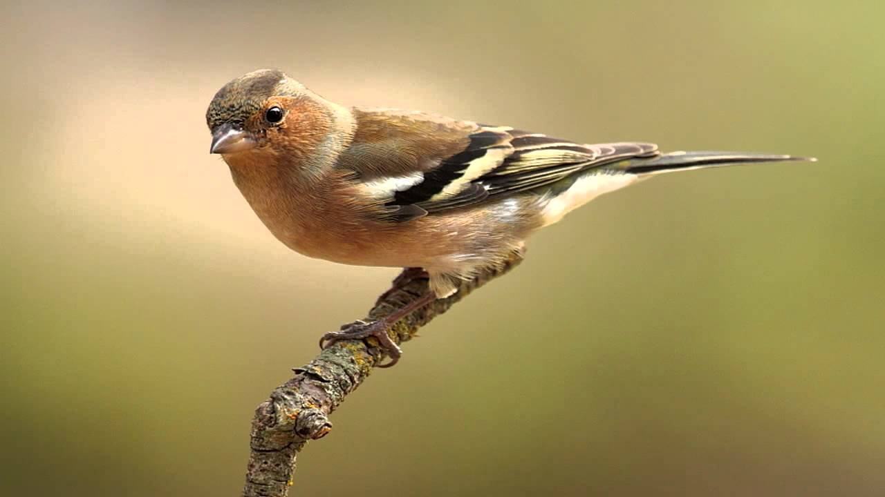

(Fringilla Coelebs)
El pinzón vulgar (Fringilla Coelebs) es uno de los Passeriformes más comunes de Europa, estando también presente en Asia, Norte de África y Macaronesia.Tiene el tamaño de un gorrión, del que se distingue bien por poseer —tanto los machos como las hembras— una llamativa mancha blanca en el hombro, la cual es muy visible en vuelo. Además, también al volar se aprecia otra banda blanca que cruza las alas en su parte media, así como otras dos bandas blancas más en las plumas externas de la cola. En México, se encuentra en casi todo el país menos en los estados de Tabasco, Campeche, Yucatán y Quintana Roo. Se distinguen por tener un canto melodioso, alegre y variado.
1. En general se alimentan de semillas, pero a diferencia de la mayoría de los pinzones, los jóvenes consumen insectos. 2. Independientemente del sexo, el pinzón vulgar muestra una llamativa mancha blanca en los hombros, una venda blanca en las alas y plumas blancas en el exterior de los impuestos. 3. Los pinzones vulgares corren en el suelo con un movimiento rítmico de la cabeza, y su vuelo es como una ola. 4. Los pinzones son esencialmente monógamos, con parejas que a menudo se mantienen más allá de una temporada. 5. Su poderoso canto es muy conocido, por lo que a él debe su nombre en inglés (fink). Los machos tienen entre dos y tres tipos de canciones, y también tienen dialectos regionales.